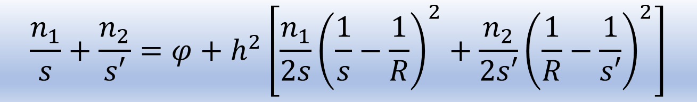
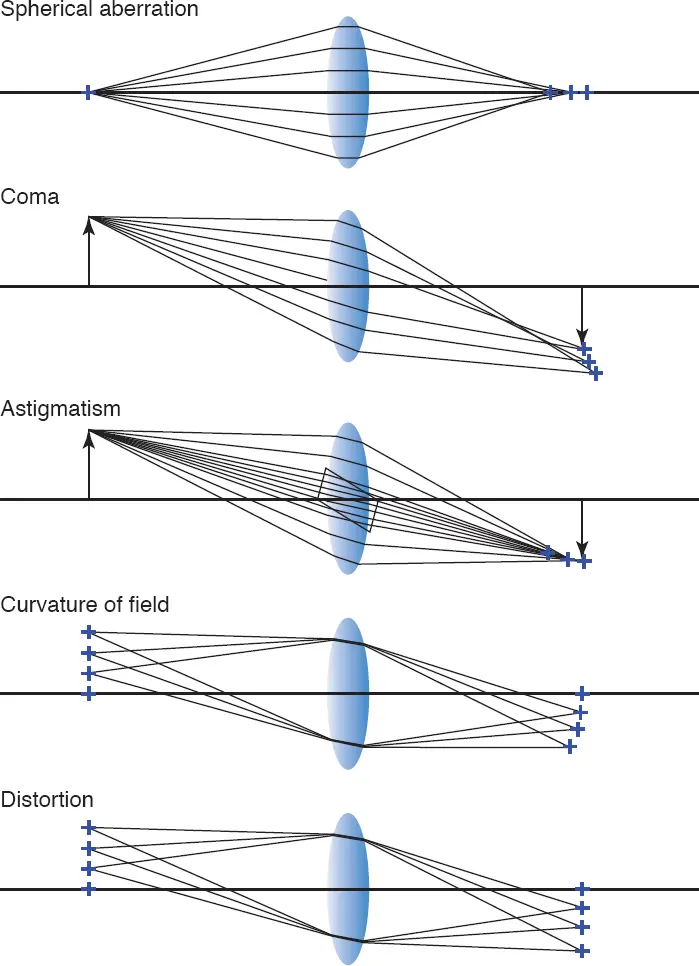
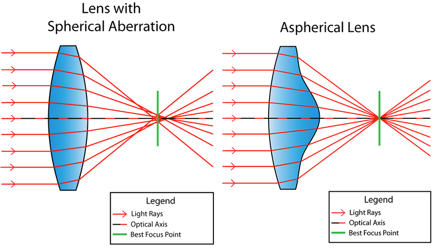
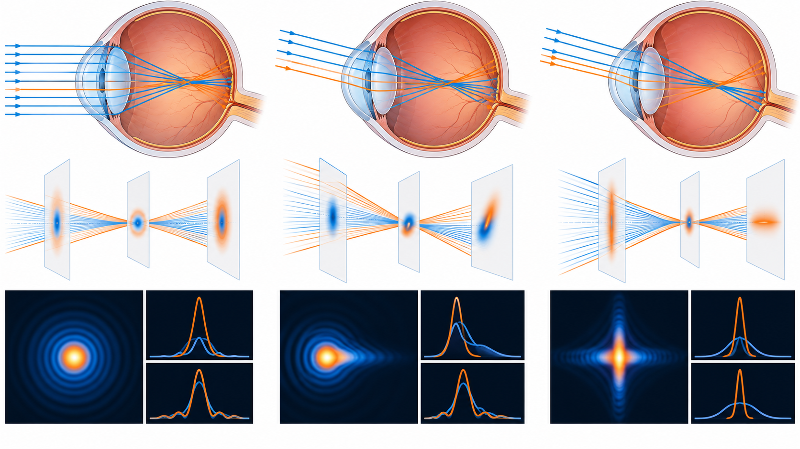
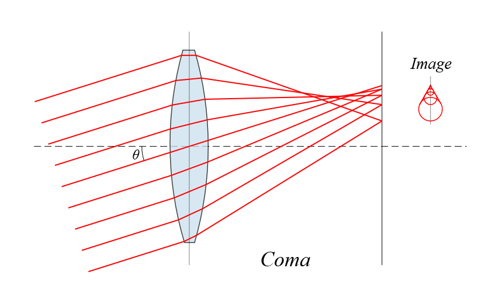
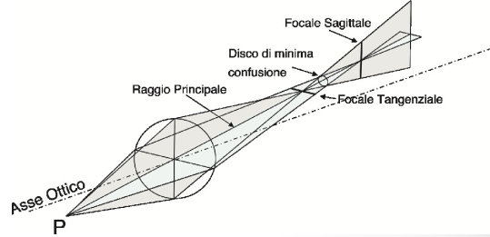
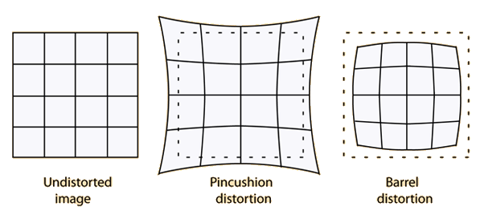
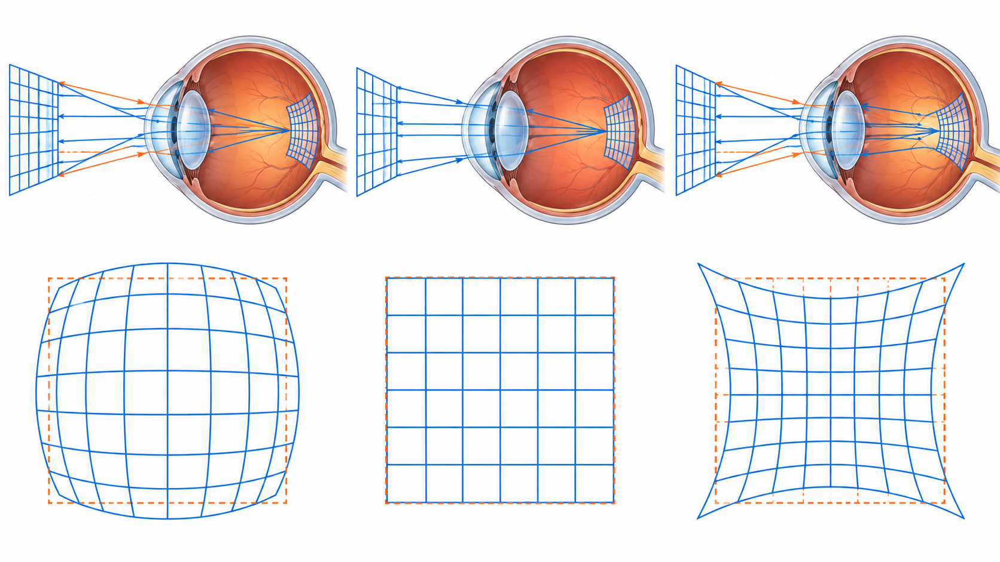
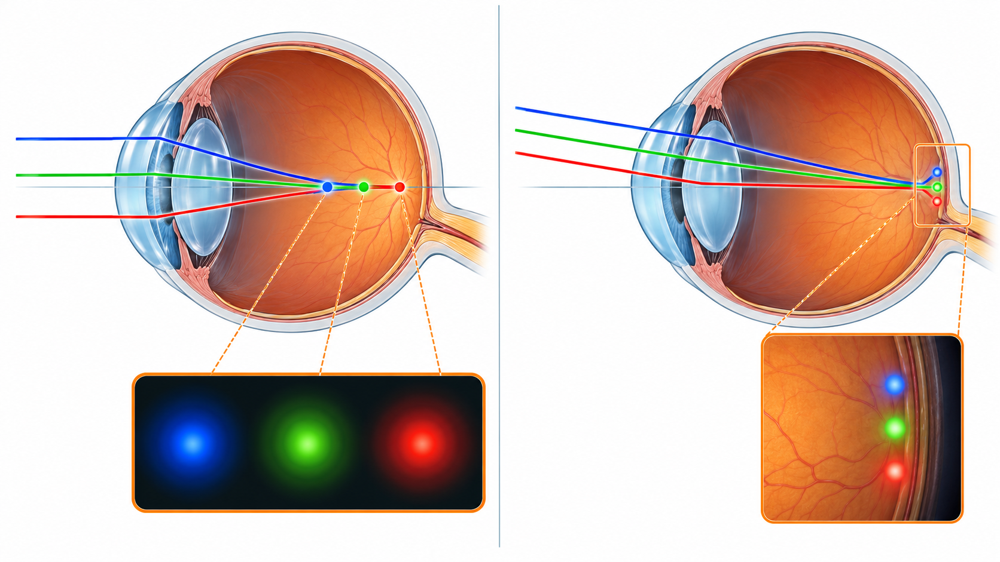
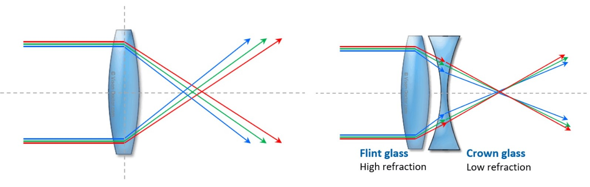

Obiettivi
- Distinguere aberrazione sferica, coma e astigmatismo fuori asse.
- Separare curvatura di campo e distorsione.
- Descrivere l’immagine di un punto attraverso la PSF.
- Distinguere cromatica longitudinale e trasversale.
- Spiegare cosa possono migliorare diaframmi, asferiche e doppietti.
Quali difetti può produrre un sistema ottico?
Livello intuitivo: Un punto può diventare una macchia rotonda, una cometa o una linea. Un insieme di punti può anche risultare nitido, ma deformato. Sono effetti diversi, quindi richiedono spiegazioni diverse.
Per essere maggiormente rigorosi: Le cinque aberrazioni monocromatiche primarie di Seidel sono sferica, coma, astigmatismo, curvatura di campo e distorsione. Descrivono termini di un’approssimazione delle aberrazioni. La dispersione introduce inoltre aberrazioni cromatiche. La PSF è la distribuzione d’intensità prodotta da un punto.
Dall’equazione degli ottici alle aberrazioni di Seidel
Livello intuitivo: L’equazione degli ottici riassume la messa a fuoco ideale con poche grandezze. Funziona bene per raggi vicini all’asse. Se includiamo raggi più lontani dall’asse e punti fuori dal centro, servono altri contributi per descrivere dove arriva la luce.
Per essere maggiormente rigorosi: L’ottica gaussiana conserva i termini di primo ordine dello sviluppo delle leggi di rifrazione. La teoria di Seidel mantiene contributi successivi: le aberrazioni primarie sono di terzo ordine nella deviazione dei raggi e di quarto ordine nell’errore del fronte d’onda. Quindi l’equazione degli ottici si recupera come limite parassiale di una descrizione più completa. “Equazione di Seidel” non indica una formula universale esatta per ogni lente e ogni geometria.
I cinque contributi monocromatici principali sono:
- Aberrazione sferica: differenza fra comportamento dei raggi centrali e marginali, anche in asse.
- Coma: macchia asimmetrica per punti fuori asse.
- Astigmatismo dei fasci obliqui: differenza fra fuoco tangenziale e sagittale.
- Curvatura di campo: migliore fuoco su una superficie curva.
- Distorsione: variazione dell’ingrandimento nel campo e deformazione della geometria.
La dispersione aggiunge contributi cromatici, longitudinali e trasversali, da distinguere dai cinque monocromatici.


Aberrazioni monocromatiche
Aberrazione sferica
Livello intuitivo: I raggi vicini al bordo della lente possono focalizzarsi in una posizione diversa da quelli centrali. Non troviamo un punto dove siano tutti perfettamente concentrati.
Per essere maggiormente rigorosi: La sferica interessa anche un punto assiale. Il segno e l’entità dipendono dall’intero sistema e dai coniugati. Diaframmare esclude raggi marginali, ma aumenta la diffrazione se l’apertura è troppo piccola. Superfici asferiche e combinazioni di elementi possono ridurre la differenza dei fuochi.


Coma
Livello intuitivo: Un punto lontano dal centro del campo può apparire come una piccola cometa, con una parte più concentrata e una coda.
Per essere maggiormente rigorosi: La coma produce una PSF asimmetrica per punti fuori asse. Dipende da campo, apertura, forma degli elementi e posizione del diaframma. Non si definisce attraverso un generico allungamento perpendicolare all’asse.

Astigmatismo dei fasci obliqui
Livello intuitivo: Un punto fuori asse può dare due brevi linee a distanze differenti. Fra queste troviamo una macchia più simile a un cerchio, ma non un punto perfetto.
Per essere maggiormente rigorosi: I fuochi tangenziale e sagittale corrispondono ai due fasci principali del punto fuori asse. Fra le focaline si trova il cerchio di minima confusione. Questa aberrazione può esistere in un sistema centrato con superfici di rivoluzione e va distinta dall’astigmatismo refrattivo assiale dell’occhio.

Campo dell’immagine
Curvatura di campo
Livello intuitivo: Il centro e i bordi possono essere messi a fuoco su una superficie curva invece che sullo stesso piano. Un sensore piano non coincide allora con tutte le posizioni di miglior fuoco.
Per essere maggiormente rigorosi: La curvatura di Petzval dipende dalla somma dei contributi delle superfici e dagli indici. La condizione per un campo piano non si può sostituire con una generica uguaglianza fra due prodotti indice-focale. In presenza di astigmatismo, le superfici tangenziale e sagittale vanno considerate separatamente.
Distorsione
Livello intuitivo: Una griglia può apparire incurvata, anche se le sue linee sono localmente nitide. Nel barilotto l’ingrandimento diminuisce verso la periferia, nel cuscinetto aumenta.
Per essere maggiormente rigorosi: La distorsione riguarda la relazione tra posizione dell’oggetto e posizione dell’immagine. Altera la geometria del campo, senza implicare necessariamente un allargamento della PSF locale. Può dipendere anche dalla posizione del diaframma e dalla configurazione dei coniugati.


Aberrazione cromatica
Perché il colore cambia la messa a fuoco?
Livello intuitivo: Il materiale non devia tutti i colori allo stesso modo. Una lente può concentrare blu e rosso in posizioni differenti, producendo bordi colorati o perdita di nitidezza.
Per essere maggiormente rigorosi: L’indice dipende dalla lunghezza d’onda. La cromatica longitudinale cambia la posizione assiale del fuoco. La cromatica trasversale cambia l’ingrandimento o la posizione laterale dell’immagine con il colore.

Come si riduce?
Livello intuitivo: Combinare materiali con dispersioni diverse permette di avvicinare i fuochi di alcuni colori. Un doppietto acromatico sfrutta questo principio.
Per essere maggiormente rigorosi: Un acromatico corregge la differenza di fuoco per lunghezze d’onda di progetto, senza eliminare necessariamente ogni residuo spettrale. Il numero di Abbe descrive una dispersione relativa. Un valore alto del materiale non garantisce da solo la correzione dell’intero sistema.
